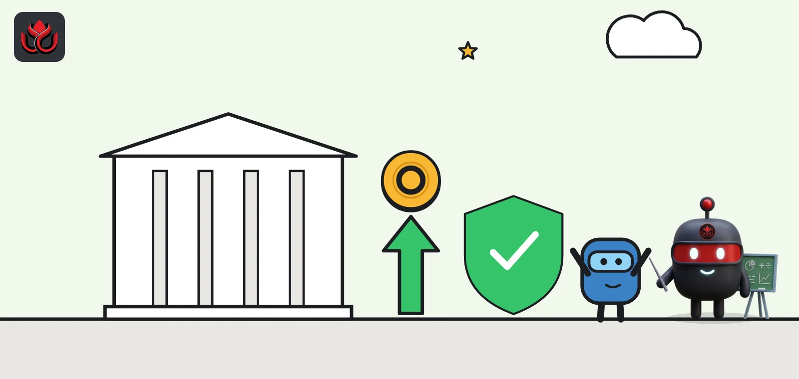
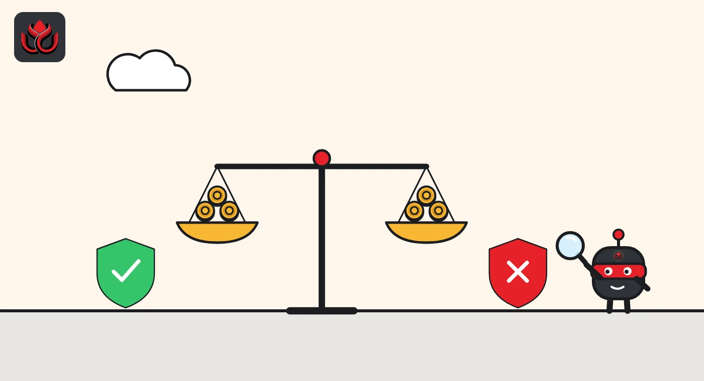
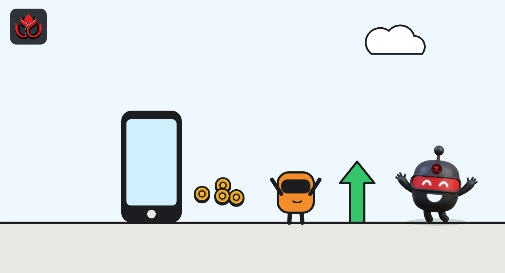

4.40% on a token: SoFi launches the first national bank-issued tokenized deposit for consumers
SoFi Earn (SOFIE) turns a dollar on deposit at SoFi Bank into a token that pays 4.40% and keeps FDIC coverage. Swap it for SoFi's stablecoin to spend or send, and that coverage ends.

Key points
- SoFi launched SOFIE on October 22, 2026, a token worth $1 on deposit at SoFi Bank that pays a variable 4.40% a year.
- While money sits in SOFIE, it is FDIC insured. Swap it one-for-one into the SoFiUSD stablecoin to spend or send, and that protection ends.
- The 4.40% rate beats the 3.71% average yield on tokenized Treasury funds on November 2, though the products are not the same.
What SoFi launched
SoFi Technologies, the US online bank, launched SoFi Earn (SOFIE) on October 22, 2026, the company announced. SOFIE is a tokenized deposit: each token represents $1 held on deposit at SoFi Bank, and members reach it through their SoFi Crypto account.
The token pays an annual percentage yield (APY) of 4.40%. The rate is variable, was set as of October 20 and can change at any time. Funds are covered by FDIC deposit insurance up to $250,000 per depositor, per bank, per ownership category. SoFi calls SOFIE the first and only national bank-issued tokenized deposit for consumers, and its fifth new crypto product in less than a year. It is rolling out to SoFi Crypto members through November.
CEO Anthony Noto said "your money should keep working for you until the moment you need it."
The catch: swap to spend and the insurance ends
SOFIE is designed to sit next to SoFiUSD, the dollar stablecoin SoFi launched in December 2025. A member can convert SOFIE into SoFiUSD one-for-one, then use the stablecoin to buy crypto in the SoFi app or send funds to a supported external wallet at any hour of any day.
The trade-off matters. While money is in SOFIE, it is a bank deposit: it earns interest and has FDIC coverage. SoFi's own disclosures make clear that SOFIE is not a payment stablecoin and that digital assets other than SOFIE are not FDIC insured. Once money becomes SoFiUSD, it is outside that deposit protection.
SoFi gives a simple example. A member saving $5,000 for a future crypto purchase can park it in SOFIE, earn the APY while waiting, then convert to SoFiUSD when ready to buy. The company also cited Federal Reserve research estimating that about $64 billion, or 21.2% of the stablecoin market, sits idle in rarely used or forgotten wallets.

How 4.40% compares on-chain
SOFIE's rate is above the current yields on tokenized US Treasury funds. On November 2, 2026, rwa.xyz showed a 7-day APY of 3.75% for BlackRock's BUIDL fund, which holds $2.08 billion but has only 101 holders, because it is open only to large qualified investors with a $5 million minimum. The 7-day APY across tokenized Treasury funds was 3.71%, according to rwa.xyz.
The products are not the same. SOFIE is an insured bank deposit for retail users, while the funds hold short-term US government debt for institutions. Rates on both can change.
SOFIE vs. tokenized Treasury yields
% APY
Sources: SoFi, rwa.xyz Treasuries, rwa.xyz BUIDL
SoFi's crypto buildout
SOFIE is the latest step in a fast expansion. SoFi says it became the first nationally chartered bank to launch crypto trading for consumers in November 2025, and members can now trade more than 40 cryptocurrencies. It launched SoFiUSD in December 2025, calling it the first stablecoin issued by a US national bank. Earlier in 2026 it launched Big Business Banking for companies handling both fiat and digital assets.
On September 22, SoFi and Mastercard said stablecoin settlement was live across SoFi Bank's debit and credit card program. SoFi is moving its full card program to settlement in SoFiUSD, a program it expects to process more than $25 billion in annualized volume, the companies said.

Still a small business for SoFi
SoFi's third-quarter results, published on October 27, gave numbers on its crypto business. Crypto reached 503,000 products by the end of September, the company reported. Net crypto transaction revenue, mainly fees from member buy and sell orders, was $1.6 million in the quarter and $3.7 million over nine months.
That is small next to the whole company. SoFi posted record quarterly net revenue of $1.39 billion under standard accounting, up 44% from a year earlier, and net income of $241 million. Members grew 35% to 17.1 million and total products 44% to 26.7 million. SoFi also raised its 2026 guidance to $5.04 billion in adjusted net revenue.
These figures predate SOFIE, so they do not show how much money has moved into it.
Timeline
SoFi launches crypto trading for consumers
SoFiUSD stablecoin launches
SoFiUSD card settlement goes live on Mastercard's network
SoFi announces SOFIE
Q3 results: 503,000 crypto products
SOFIE rollout to SoFi Crypto members due to finish
LC Insight analysis
This section is our reading of the facts above, not a statement of fact.
- SOFIE is a neat answer to the stablecoin yield question. Interest stays on the deposit side, the stablecoin is one swap away, and SoFi never has to pay interest on the stablecoin itself.
- Exchanges and fintechs that rely on stablecoin rewards should worry. If a regulated bank offers an insured 4.40% inside a crypto app, uninsured stablecoin balances look worse for money that is just waiting.
- The open questions are practical. SoFi has not named the blockchain or said whether SOFIE can leave its app. Until it can, SOFIE is closer to a high-yield savings account with crypto plumbing than an on-chain dollar.
What's next
- Which blockchain SOFIE runs on and whether it can be transferred externally
- Changes to the 4.40% rate as US interest rates move
- Whether other national banks launch consumer deposit tokens
- SoFi's fourth-quarter disclosure of SOFIE balances
Disclaimer. This article is based on public information and the sources listed below as of the update time shown. It is for information only and is not investment, legal or tax advice. Figures may change as companies and authorities publish new data.